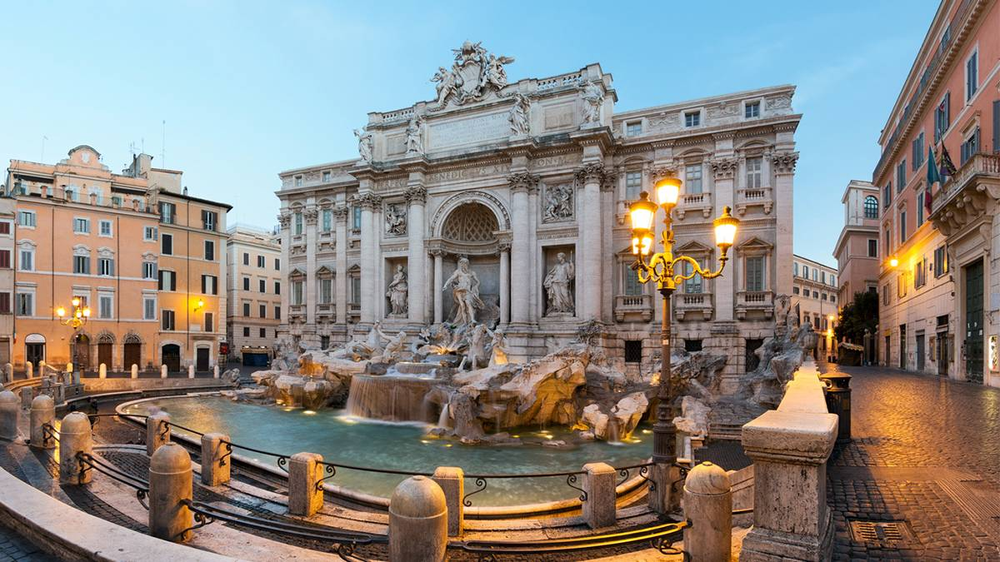
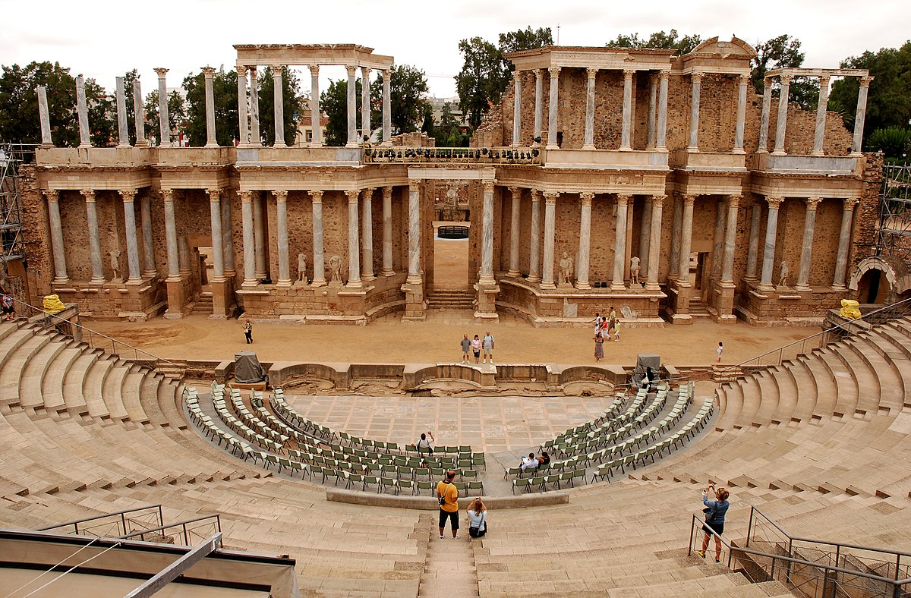
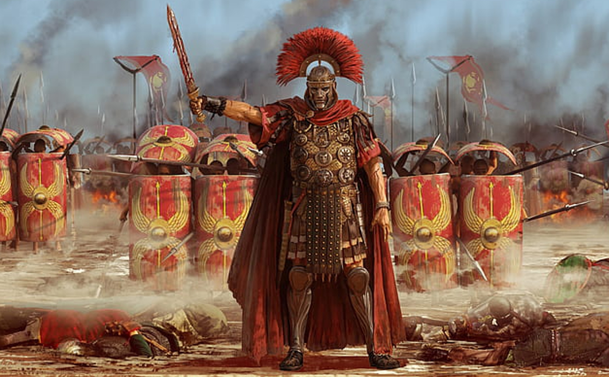
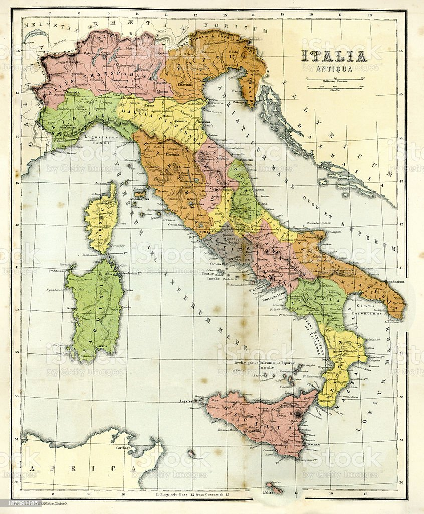
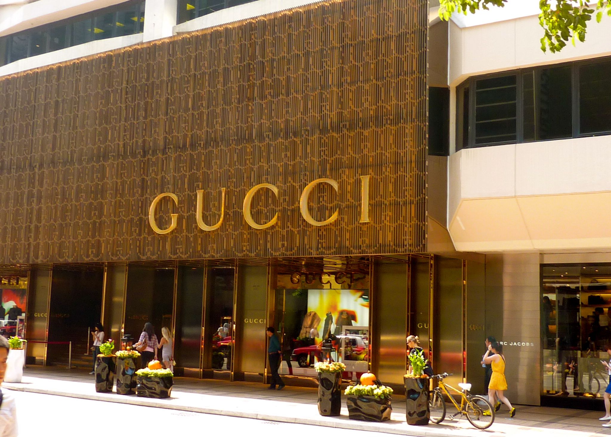
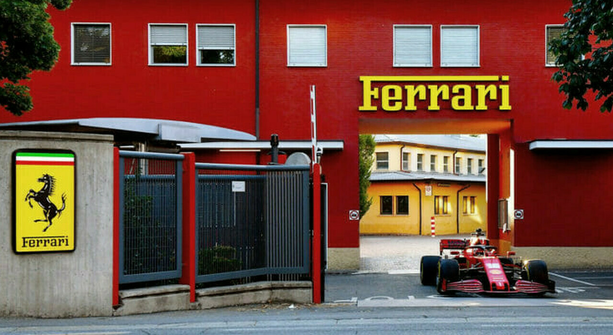
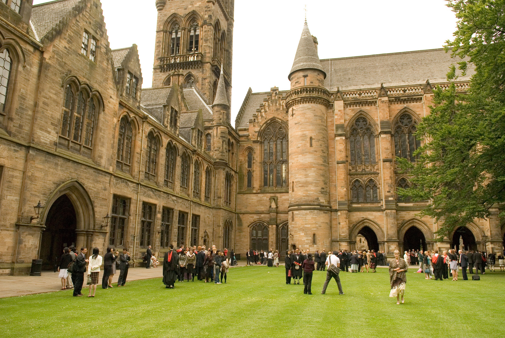
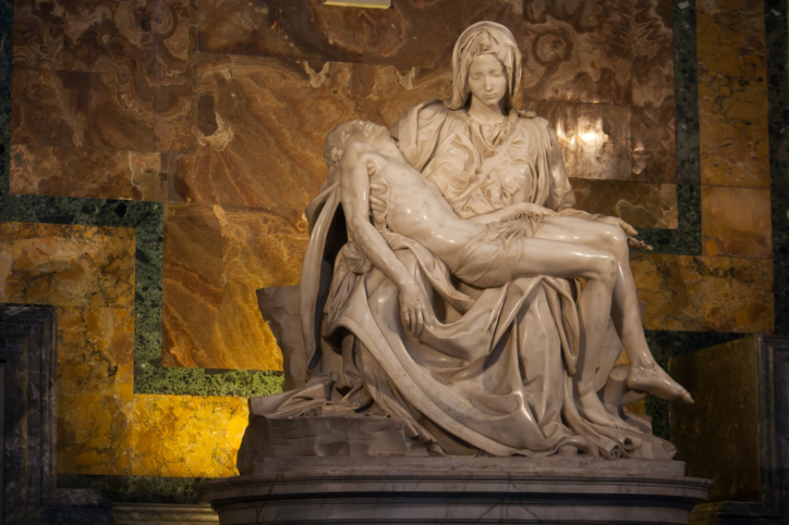
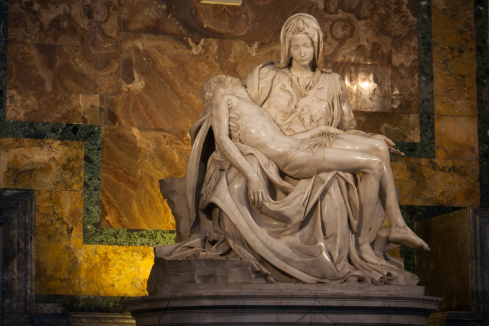

|  |
Itália, oficialmente República Italiana (em italiano: Repubblica Italiana), é uma república parlamentar unitária localizada no centro-sul da Europa. Ao norte, faz fronteira com França, Suíça, Áustria e Eslovênia ao longo dos Alpes. A parte sul consiste na totalidade da península Itálica, Sicília, Sardenha, as duas maiores ilhas no mar Mediterrâneo, e muitas outras ilhas menores ficam no entorno do território italiano. Os Estados independentes de San Marino e do Vaticano são enclaves no interior da Itália, enquanto Campione d'Italia é um exclave italiano na Suíça. O território do país abrange cerca de 301338 km² e a maior parte do seu território tem um clima temperado sazonal. Com 60,8 milhões de habitantes em 2015, é a quinta nação mais populosa da Europa e a 23.ª do mundo. Roma, a capital italiana, foi durante séculos o centro político e religioso da civilização ocidental como capital do Império Romano e como sede da Santa Sé. Após o declínio do Império Romano, a Itália sofreu inúmeras invasões de povos estrangeiros, desde tribos germânicas, como os lombardos e ostrogodos, aos bizantinos e, mais tarde, os normandos, entre outros. Séculos mais tarde, Itália tornou-se o berço das repúblicas marítimas e do Renascimento, um movimento intelectual extremamente frutífero que seria fundamental na formação subsequente do pensamento europeu. Durante grande parte de sua história pós-romana, a Itália foi fragmentada em vários reinos (tais como o Reino da Sardenha; o Reino das Duas Sicílias e o Ducado de Milão, etc.) e cidades-Estado, mas foi unificada em 1861, após um período tumultuado da história conhecido como "Il Risorgimento" ("O Ressurgimento"). Entre o final do século XIX e o fim da Segunda Guerra Mundial, a Itália possuiu um império colonial que estendia seu domínio até à Líbia, Eritreia, Somália, Etiópia, Albânia, Dodecaneso e uma concessão em Tianjin, na China. A Itália moderna é uma república democrática, classificada como o 24.º país mais desenvolvido do mundo e com índice de qualidade de vida entre os dez primeiros do planeta. O país goza de um alto padrão de vida e tem um elevado PIB nominal per capita. É um membro fundador da União Europeia e parte da Zona Euro, além de ser membro do G7, G20, OTAN, OCDE, Organização Mundial do Comércio (OMC), Conselho da Europa, União da Europa Ocidental e das Nações Unidas. A Itália tem a quarta maior reserva de ouro, o oitavo maior PIB nominal, o décimo maior PIB (PPC) e o sexto maior orçamento público do mundo. A República Italiana tem o nono maior orçamento de defesa do mundo, acesso às armas nucleares da OTAN e um papel proeminente nos assuntos militares, culturais e diplomáticos europeus e mundiais, o que a torna uma das principais Potências Médias do mundo e uma Potência Regional de destaque na Europa. O país tem um elevado nível de escolaridade pública e é uma nação altamente globalizada. |

|
Várias hipóteses para o nome da Itália foram formuladas. Umas delas teoriza que o nome se origina de um empréstimo linguístico. Quando a hegemonia etrusca ia chegando a seu ocaso com a expansão dos latinos, os povos do Sul, em particular os oscos, úmbrios e outros povos do centro e Sul da península Itálica possuíam um numeroso rebanho bovino. Na língua dos oscos, o acusativo 'vitluf' (aos bezerros) deu lugar em latim a 'vitellus' (bezerrinho), palavra proveniente de vitulos (bezerro de entre um e dois anos) e similarmente no úmbrio como vitlo. Estas palavras se derivaram do indo-europeu 'wet-olo' (de um ano cumprido), formada por sua vez a partir de 'wet-' (ano), também presente nos vocábulos "veterano" e "veterinário". O gado era tão importante para esses povos que adotaram como emblema a imagem de um touro jovem, que aparece em algumas moedas da época, com o nome de vitalos, que em pouco tempo converteu-se em 'italos', nome com que se denominou as tribos do sul. De acordo com Antíoco de Siracusa, a porção sul da península Bruttium (moderna Calábria: província de Régio da Calábria, e parte das províncias de Catanzaro e Vibo Valentia). Mas no seu tempo, Itália e Enótria já haviam se tornado sinônimos, e o nome também era aplicado à maior parte da Lucânia (atual Basilicata). Os gregos gradualmente aplicaram o nome Itália para uma região maior, mas foi durante o reino do imperador Augusto (fim do século I a.C.) que o termo foi expandido para cobrir toda a península até os Alpes. e 'itali – orum' foi usado como gentílico para seus habitantes. O historiador grego Dionísio de Halicarnasso regista essa versão, junto com a lenda de que a Itália devia o seu nome a Ítalo, um rei lendário dos enótrios, o que também é mencionado por Aristóteles e Tucídides. |
|   |
A história da Itália influenciou fortemente a cultura e o desenvolvimento social, tanto na Europa como no resto do mundo. Foi o berço da civilização etrusca, da Magna Grécia, da civilização romana, da Igreja Católica, das repúblicas marítimas, do humanismo, do Renascimento e do fascismo. Foi o lugar de nascimento de muitos artistas, cientistas, músicos, literatos, exploradores. As escavações em toda a Itália revelaram uma presença de neandertais que remonta ao período paleolítico, cerca de 200 mil anos atrás. Os humanos modernos apareceram há cerca de 40 mil anos na região. Os sítios arqueológicos deste período incluem locais como Ceprano e Gravina in Puglia. Civilizações importantes que desapareceram há milhares de anos nasceram na Itália, como a civilização de Nurago, da Sardenha. Durante a Idade do Ferro existiram várias culturas que podem ser diferenciadas em três grandes núcleos geográficos, a do Lácio Antigo, a da Magna Grécia e a da Etrúria. Uma dessas culturas, os lígures, foram um enigmático povo que habitava o norte da Itália, Suíça e sul de França. Entre os diversos povos da Antiguidade destacam-se os lígures, os vênetos e os celtas no norte, os latinos, etruscos e samnitas no centro, enquanto no sul prosperaram colônias gregas (Magna Grécia), e na Sardenha desde o segundo milênio a.C.floresceu a antiga civilização dos sardos. A Itália contemporânea nasceu como um Estado unitário quando, em 17 de março de 1861, a maioria dos estados da península e as duas principais ilhas foram unidas sob o governo do rei da Sardenha Vítor Emanuel II da Casa de Saboia. O arquiteto da unificação da Itália foi o primeiro-ministro da Sardenha, conde Camillo Benso de Cavour, que apoiou (embora não reconhecendo diretamente) Giuseppe Garibaldi, permitindo a anexação do Reino das Duas Sicílias pelo Reino da Sardenha-Piemonte. O processo de unificação teve a ajuda da França, que — juntamente com o Reino Unido — tinha interesse em criar um estado anti-Habsburgo liderado por uma dinastia amiga (Saboia) e capaz de impedir o surgimento de um estado republicano e democrático na Itália, desejado por alguns "patriotas", como Mazzini e como já tinha acontecido em parte, em Roma, Milão, Florença e Veneza durante o movimento revolucionário de 1848. A primeira capital do reino foi Turim, a antiga capital do Reino da Sardenha e ponto de partida do processo de unificação da Itália. Depois da convenção de setembro de 1864, a capital foi transferida para Florença. Em 1866, a Itália anexou o Vêneto, até então na posse do Império Austríaco, na sequência da terceira guerra de independência, na qual a Itália foi aliada da Prússia de Bismarck. A unificação não incluiu a Córsega, a região de Nice, cidade natal de Garibaldi, nem Roma e os territórios vizinhos, que estavam sob o controle do Papa e protegidos por tropas de Napoleão III. Graças à derrota da França pelos prussianos, após uma rápida ação militar em 20 de setembro de 1870, Roma também foi anexada e proclamada a capital do reino. Mais tarde, com o Tratado de Latrão, em 1929, o Papa obteve a soberania da Cidade do Vaticano. Outra entidade autônoma dentro das fronteiras italianas é a República de San Marino. Mas mesmo após a conquista de Roma em 1870, a unificação da Itália ainda não estava completa, pois faltavam ainda as chamadas "terras irredentas": o Trentino, Trieste, a Ístria e a Dalmácia, que os nacionalistas clamavam como pertencentes à Itália. O Trentino, Trieste, a Ístria e Fiume foram anexados depois dos tratados de paz, após a Primeira Guerra Mundial, impostos pela França, Reino Unido e Estados Unidos aos Impérios Centrais, perdedores da guerra. A turbulência que se seguiu à devastação da Primeira Guerra Mundial, inspirada pela Revolução Russa de 1917, levou à turbulência e anarquia. O governo liberal, temendo uma revolução socialista, começou a apoiar o pequeno Partido Nacional Fascista, liderado por Benito Mussolini. Em outubro de 1922, as milícias fascistas camisas negras tentaram um golpe de Estado (a "Marcha sobre Roma"), que apesar de ter falhado, levou o rei Vítor Emanuel III a nomear Mussolini como primeiro-ministro. Nos anos seguintes, Mussolini proibiu todos os partidos políticos e liberdades pessoais, instituindo assim uma ditadura A Itália se tornou uma república, após um referendo realizado em 2 de junho de 1946, um dia comemorado desde então como o Dia da República. Esta foi também a primeira vez que as mulheres italianas tiveram direito ao voto. O filho de Vítor Emmanuel III, Humberto II, foi forçado a abdicar e foi exilado. A constituição republicana entrou em vigor em 1 de janeiro de 1948. Nos termos dos Tratados de Paz de Paris de 1947, a área da fronteira oriental foi perdida para a Iugoslávia e, mais tarde, o Território Livre de Trieste foi dividido entre os dois Estados. O medo no eleitorado italiano de uma possível tomada comunista provou ser crucial para o resultado da primeira eleição com sufrágio universal em 18 de abril de 1948, quando os democratas-cristãos, sob a liderança de Alcide De Gasperi, obtiveram uma vitória esmagadora. Consequentemente, em 1949, a Itália tornou-se membro da OTAN. O Plano Marshall ajudou a reavivar a economia italiana, que, até final dos anos 1960, desfrutou de um período de crescimento econômico sustentado, o que foi comumente chamado de "Milagre Econômico". Em 1957, a Itália foi um membro fundador da Comunidade Econômica Europeia (CEE), que posteriormente se tornou a União Europeia (UE) em 1993. |
|  |
A Itália está localizada no sul da Europa e compreende a península Itálica e uma série de ilhas, incluindo as duas maiores, Sicília e Sardenha. Situa-se entre as latitudes 35° e 47° N e longitude 6° e 19° E. Embora o país compreenda a totalidade península e a maior parte da bacia alpina meridional, alguns do território da Itália se estendem além da bacia alpina e algumas ilhas estão localizadas fora da plataforma continental da Eurásia. Esses territórios são as comunas de Livigno, Sesto, Innichen, Dobbiaco (em parte), Chiusaforte, Tarvisio, Curon Venosta (em parte), que fazem parte da bacia do rio Danúbio, enquanto o Val di Lei constitui parte do bacia do Reno e as ilhas de Lampedusa e Lampione estão na plataforma continental africana. A área total do país é de 301230km², dos quais 294020km² são terra e 7210km² água. Incluindo as ilhas, a Itália tem um litoral e uma fronteira de 7600 km nos mares Adriático, Jônico e Tirreno (740km) e as fronteiras comuns com a França (488km), Áustria (430km), Eslovênia (232km) e Suíça; San Marino (39km) e Cidade do Vaticano (3,2km), ambos enclaves, também entram como fronteiras. Os Apeninos formam a espinha dorsal da península e os Alpes formam a sua fronteira natural a norte, onde está o ponto mais alto da Itália, o monte Branco (4810m). O Pó, maior rio da Itália (652km), flui dos Alpes na fronteira oeste com a França e atravessa a planície da Padânia em seu caminho para o mar Adriático. Os cinco maiores lagos são (em ordem de tamanho decrescente): Garda (367,94 km²), Maggiore (212,51 km²), Como (145,9 km²), Trasimeno (124,29 km²) e Bolsena (113,55 km²). O país está situado no ponto de encontro da placas tectônicas eurasiática e africana, levando a uma atividade sísmica e vulcânica considerável. Existem 14 vulcões na Itália, três dos quais estão ativos: Etna (o tradicional local de forja de Vulcano), Stromboli e Vesúvio. Este último é o único vulcão ativo da Europa continental e é o mais famoso pela destruição de Pompeia e Herculano. Várias ilhas e colinas foram criadas pela atividade vulcânica e ainda há uma grande caldeira ativa, os Campos Flégreos, no noroeste de Nápoles. Graças à grande extensão longitudinal da península e a conformação interna principalmente montanhosa, o clima da Itália é altamente diversificado. Na maior parte das regiões setentrionais e centrais do interior, o clima varia de subtropical úmido a continental e oceânico úmido. Em particular, o clima da região geográfica da Planície Padana é predominantemente continental, com invernos rigorosos e verões quentes. As áreas costeiras da Ligúria, Toscana e a maioria do Sul geralmente se encaixam no estereótipo do clima mediterrâneo (classificação climática de Köppen, Csa). As condições nas áreas costeiras peninsulares podem ser muito diferentes dos terrenos e vales mais altos do interior, particularmente durante os meses de inverno, quando as altitudes mais altas tendem a ser frias, úmidas e muitas vezes com neve. As regiões costeiras têm invernos suaves e verões quentes e geralmente secos, embora os vales das planícies possam ser bastante quentes no verão. As temperaturas médias no inverno variam de 0 °C nos Alpes a 12 °C na Sicília, assim como as temperaturas médias no verão variam de 20 °C a mais de 25 °C. Os invernos podem variar muito em todo o país com períodos frios, nevoentos e com neve no norte e condições mais amenas e ensolaradas no sul. Os verões são geralmente quentes e úmidos em todo o país, especialmente no sul, enquanto as áreas norte e central podem experimentar fortes tempestades ocasionais da primavera ao outono. |
|   |
A Itália tem uma economia de mercado caracterizada por um elevado PIB per capita e taxas de desemprego baixas. Em 2010, era a oitava maior economia do mundo e a quarta maior da Europa em termos de PIB nominal. Por paridade do poder de compra (PPC), o país possui o décimo maior PIB do mundo e o quinto maior da Europa. Após a Segunda Guerra Mundial, a Itália foi rapidamente transformada de uma economia baseada na agricultura para um dos países mais industrializados do mundo e um país líder em comércio mundial e exportações. É um país desenvolvido, com a oitava melhor qualidade de vida do mundo e o 23º melhor Índice de Desenvolvimento Humano (IDH). Apesar da recente crise econômica global, o PIB per capita italiano em PPC mantém-se aproximadamente igual à média da União Europeia (UE), enquanto a taxa de desemprego (8,5%) se destaca como uma das mais baixas da UE. O país é bem conhecido por seu setor de negócios econômicos influente e inovador, um setor trabalhista e agrícola competitivo (a Itália é o maior produtor mundial de vinho) e por seus automóveis, indústria, eletrodomésticos e design de moda de alta qualidade. A Itália tem um número menor de empresas multinacionais globais quando comparada a outras economias de tamanho similar, mas há um grande número de pequenas e médias empresas, notoriamente agrupadas em vários distritos industriais, que são a espinha dorsal da indústria italiana. Isso produziu um setor industrial focado principalmente na exportação de nicho de mercado e produtos de luxo, que, se por um lado é menos capaz de competir em quantidade, do outro é mais capaz de enfrentar a concorrência da China e de outras economias emergentes da Ásia com base em custos laborais mais baixos e com produtos de maior qualidade. Em 2009, o país era o sétimo maior exportador do mundo, caindo para 10º lugar em 2020, tanto nas exportações, quanto nas importações. Existem fortes laços comerciais da Itália com outros países da União Europeia, com quem realiza cerca de 59% seu comércio total. Seus maiores parceiros comerciais da UE, em termos de quota de mercado, são a Alemanha (12,9%), França (11,4%) e Espanha (7,4%). Finalmente, o turismo é um dos setores de maior crescimento e rentabilidade da economia nacional: com 43,6 milhões de chegadas de turistas internacionais e receitas totais estimadas em 38,8 bilhões de dólares em 2010, a Itália é ao mesmo tempo o quinto país mais visitado e que mais lucra com o turismo no mundo. Um Ferrari 458 na sede da Ferrari em Maranello. A Itália tem uma indústria automotiva sofisticada e é o sétimo maior exportador de mercadorias do mundo Logotipos das marcas italianas Gucci e Dolce & Gabbana no CityCenter em Las Vegas, Estados Unidos Veneza, construída sobre 117 ilhas. A Itália recebe 37 milhões de turistas anualmente. Apesar dessas importantes conquistas, a economia italiana hoje sofre de muitos e relevantes problemas. Depois de um forte crescimento do PIB, entre 5 e 6% ao ano, da década de 1950 aos anos 1970 em abrandamento progressivo nas décadas de 1980 e 1990, as taxas médias de crescimento anual da Itália tiveram uma performance ruim, de 1,23%, em comparação com uma média taxa de crescimento anual de 2,28% em toda a UE. Diante da estagnação econômica, os esforços do governo para reavivar a economia através de maciços gastos públicos a partir dos anos 1980, geraram um forte aumento da dívida pública. De acordo com estatísticas do Eurostat, a dívida pública italiana ficou em 116% do PIB em 2010 — a segunda maior relação dívida/PIB, somente superada pela Grécia, com 126,8%. No entanto, a maior fatia da dívida pública italiana é de propriedade de italianos, o que é uma grande diferença entre a Itália e a Grécia. Além disso, os padrões de vida dos italianos também têm uma considerável desigualdade entre as regiões norte e sul do país. A média do PIB per capita no norte excede em muito a média da União Europeia, enquanto que muitas regiões do sul italiana têm uma renda dramaticamente baixa. A Itália tem sido muitas vezes referida o "homem doente da Europa", caracterizado pela estagnação econômica, instabilidade política e problemas em realizar programas de reforma. Mais especificamente, a Itália sofre de deficiências estruturais, devido à sua conformação geográfica e a falta de matérias-primas e recursos energéticos: em 2006 o país importou mais de 86% do seu consumo total de energia (99,7% dos combustíveis sólidos, 92,5% de petróleo, 91,2% de gás natural e 15% da electricidade). A economia italiana está enfraquecida pela falta de desenvolvimento da infraestrutura, reformas de mercado e investimento em pesquisa, além de um também elevado déficit público. No Índice de Liberdade Econômica de 2008, o país ocupou o 64º lugar no mundo e o 29º na Europa, a classificação mais baixa da Zona Euro. A Itália ainda recebe a ajuda ao desenvolvimento da União Europeia a cada ano. Entre 2000 e 2006, a Itália recebeu 27,4 bilhões de euros da UE. O país tem uma burocracia estatal ineficiente, baixa proteção aos direitos de propriedade e altos níveis de corrupção política, além de uma tributação pesada e gastos públicos que em 2008 representavam cerca da metade do PIB nacional. Além disso, os gastos do país em pesquisa e desenvolvimento (P&D) em 2006 foram equivalentes a 1,14% do PIB, abaixo da média da UE de 1,84% e do alvo Estratégia de Lisboa de dedicar 3% do PIB para atividades de P&D. De acordo com um relatório de 2007 dos Confesercenti, uma associação empresarial importante na Itália, o crime organizado na Itália representava o "maior segmento da economia italiana", respondendo por 90 bilhões de euros em receitas e 7% do PIB da Itália. |


|
Em 2004 o setor de transporte na Itália gerou um valor de negócios de 119,4 bilhões de euros, empregando 935500 pessoas em 153700 empresas. Com relação a rede nacional de estradas, haviam 668721km de rodovias utilizáveis na Itália, incluindo 6487km de autoestradas, possuídas pelo estado italiano mas operados pela empresa privada da Atlantia. Em 2005, havia na Itália cerca de 34667000 carros de passageiros (590 carros por 1000 pessoas). As linhas férreas na Itália totalizam 16627km, a 17ª maior rede ferroviária do mundo, e são operadas pela Ferrovie dello Stato. trens de alta velocidade incluem os da classe ETR, dos quais o ETR 500 viaja a 300km/h. Em 1991, a Treno Alta Velocità SpA (TAV) foi criada, uma sociedade de propósito específico pertencente à RFI (controlada pela Ferrovie dello Stato) para o planejamento e construção de linhas para trem de alta velocidade ao longo das linhas mais importantes e saturadas da Itália. O objetivo da construção do TAV é de melhorar a viagem ao longo das linhas ferroviárias mais saturadas da Itália e adicionar novos trilhos a estas linhas, notadamente nos eixos Milão-Nápoles e Turim-Milão-Veneza. Existem cerca de 133 aeroportos na Itália, incluindo os dois hubs de Malpensa Internacional (perto de Milão) e o Internacional Leonardo Da Vinci-Fiumicino (perto de Roma). O país tem 27 grandes portos, sendo o maior em Gênova, que também é o segundo maior do mar Mediterrâneo, depois de Marselha. 2400km de hidrovias passam pela Itália. A educação na Itália é gratuita e obrigatória entre os 6 e 16 anos de idade e consiste em cinco fases: ensino infantil (dell'infanzia scuola), escola primária (scuola primaria), ensino secundário de primeiro grau (scuola secondaria di primo grado), ensino secundário de segundo grau (scuola secondaria di secondo grado) e universidade (Università). A educação primária dura oito anos. Os alunos recebem uma educação básica em inglês, matemática, ciências naturais, história, geografia, estudos sociais, educação física e artes visuais e musicais. O ensino secundário tem a duração de cinco anos e inclui três tipos tradicionais de escolas voltadas para diferentes níveis de ensino: o liceu prepara os alunos para os estudos universitários com um currículo clássico ou científico, enquanto o istituto tecnico e o istituto professionale preparam os alunos para o ensino profissional. No avaliação do Programa Internacional de Avaliação de Alunos (PISA) de 2012, o ensino secundário italiano foi classificado como ligeiramente abaixo da média da OCDE, mas registava-se uma melhoria forte e constante nas notas de ciências e matemática desde 2003; No entanto, existe uma grande diferença entre as escolas do Norte, que tiveram um desempenho significativamente melhor do que a média nacional (entre os melhores do mundo em alguns casos), e as escolas no Sul, que tiveram resultados muito mais pobres. O ensino superior na Itália é dividido entre as universidades públicas, universidades privadas e as prestigiadas e seletivas escolas de graduação superior, como a Escola Normal Superior de Pisa. O sistema universitário na Itália é geralmente considerado como pobre para uma potência cultural mundial do nível do país, sem universidades classificadas entre as 100 melhores do mundo e apenas 20 entre as 500 melhores em 2018 no Ranking de Xangai. No entanto, em 2015, o governo tinha agendadas grandes reformas e investimentos a fim de melhorar a internacionalização e a qualidade global do sistema. A Itália é o sexto maior produtor de artigos científicos do mundo gerando mais de 155 mil documentos científicos no ano de 2020 comparados com os mais de 125 mil em 2019 e cerca de 1,8 milhão de documentos gerados entre 1996 e 2019, tendo ultrapassado a França em 2019 e o Japão em 2020, além de cerca de 2 milhões de documentos gerados entre 1996 e 2020. Entre os cientistas italianos se destacam, entre outros, Galileo Galilei, o fundador da ciência moderna, e Leonardo da Vinci, um dos grandes gênios da humanidade; pintor, escultor, engenheiro, arquiteto, anatomista, musicista e inventor, que representa no Renascimento Italiano, o espírito universalista que o leva a maiores formas de expressão nos diversos campos da arte e do conhecimento O Estado italiano mantém um sistema de saúde pública universal desde 1978. No entanto, ele é fornecido a todos os cidadãos e residentes através de um sistema misto público-privado. A parte pública é o Servizio Sanitario Nazionale, que é organizado no âmbito do Ministério da Saúde e administrado numa base regional desconcentrada. As despesas de saúde na Itália foram responsáveis por 9,2% do PIB nacional em 2012, muito próximo da média dos países da OCDE de 9,3%. Em 2000, o sistema de saúde italiano foi classificado como o segundo melhor do mundo. A expectativa de vida na Itália era de 80 anos para os homens e 85 anos para as mulheres em 2007, colocando o país no sexto lugar do mundo em expectativa de vida. Em comparação com outros países ocidentais, a Itália tem uma taxa relativamente baixa de obesidade adulta (abaixo de 10%), provavelmente graças aos benefícios de saúde da dieta mediterrânica. A proporção de fumantes diários foi de 22% em 2012, abaixo dos 24,4% em 2000, mas ainda ligeiramente acima da média da OCDE. Fumar em locais públicos, incluindo bares, restaurantes, discotecas e escritórios tem sido restrito a quartos especialmente ventilados desde 2005. Em 2013, a UNESCO acrescentou a dieta mediterrânica da Itália (promotor), Marrocos, Espanha, Portugal, Grécia, Chipre e Croácia à lista do Patrimônio Cultural Imaterial da Humanidade. |
 

|
Por séculos dividida pela política e pela geografia até sua unificação em 1861, a Itália desenvolveu uma cultura única, moldada por uma infinidade de costumes regionais e centros locais de poder e mecenato. Durante a Idade Média e a Renascença, várias cortes magníficas competiram por atrair os melhores arquitetos, artistas e estudiosos, produzindo assim um imenso legado de monumentos, pinturas, música e literatura. A Itália tem mais sítios classificados como Patrimônio Mundial pela UNESCO (53 em 2018) do que qualquer outro país do mundo e possui importantes coleções de arte, cultura e literatura de muitos períodos diferentes. O país teve uma ampla influência cultural em todo o mundo, também porque vários italianos emigraram para outros lugares durante a diáspora italiana. Além disso, a nação tem, em geral, cerca de 100000 monumentos de todos os tipos (museus, palácios, edifícios, estátuas, igrejas, galerias de arte, casas de campo, fontes, casas históricas e vestígios arqueológicos). A literatura italiana começou após a fundação de Roma no século VIII a.C. A literatura latina era, e ainda é, altamente influente no mundo, com vários escritores, poetas, filósofos e historiadores, tais como Plínio, o Velho, Plínio, o Jovem, Virgílio, Horácio, Propércio, Ovídio e Lívio. Os romanos também eram famosos por sua tradição oral, poesia, drama e epigramas. Nos primeiros anos do século XIII, São Francisco de Assis foi considerado o primeiro poeta italiano pelos críticos literários, com sua canção religiosa Cântico das Criaturas. Outra voz italiana originou-se na Sicília. Na corte do imperador Frederico II, que governou o reino siciliano durante a primeira metade do século XIII, as letras modeladas em formas e temas provençais eram escritas em uma versão refinada do vernáculo local. O mais importante desses poetas foi o notário Giacomo da Lentini, inventor do soneto, embora o mais famoso sonetista primitivo seja Petrarca. Guido Guinizelli é considerado o fundador do Dolce Stil Novo, uma escola literária que acrescentou uma dimensão filosófica à poesia amorosa tradicional. Essa nova compreensão do amor, expressa num estilo suave e puro, influenciou Guido Cavalcanti e o poeta florentino Dante Alighieri, que estabeleceu a base da moderna língua italiana; sua maior obra, a Divina Comédia, é considerada uma das principais declarações literárias produzidas na Europa durante a Idade Média; além disso, o poeta inventou a complicada terza rima. Os dois grandes escritores do século XIV, Petrarca e Giovanni Boccaccio, procuraram e imitaram as obras da antiguidade e cultivaram suas próprias personalidades artísticas. Petrarca alcançou fama através de sua coleção de poemas, Il Canzoniere. A poesia de amor de Petrarca serviu de modelo durante séculos. Igualmente influente foi Decamerão, de Boccaccio, uma das mais populares coleções de contos de todos os tempos. arquitetura italiana apresenta numerosos estilos, muito diversificados entre si, que não podem ser simplesmente classificados por período, mas também por região, devido à divisão da Itália em várias cidades-Estado até 1861, o que originou uma gama muito diversificada e eclética em projetos arquitetônicos. O país é conhecido por suas consideráveis realizações arquitetônicas, como a construção de arcos, cúpulas e estruturas afins durante a Roma antiga, ser o fundador do movimento arquitetônico renascentista do final do século XIV ao século XVI e a terra natal do Palladianismo, um estilo de construção que inspirou movimentos como o da arquitetura neoclássica e influenciou o desenho usado nas casas de campo de nobres em todo o mundo, nomeadamente no Reino Unido, Austrália e Estados Unidos desde o final do século XVII até o início do século XX. Várias das mais belas obras da arquitetura ocidental, como o Coliseu, a Catedral de Milão, a Catedral de Florença, a Torre de Pisa ou os projetos de construção de Veneza, encontram-se na Itália. A história das artes visuais italianas faz parte da história da pintura ocidental. A arte romana foi influenciada pela da Grécia Antiga e pode, em parte, ser tomada como um descendente da pintura grega antiga. No entanto, a pintura romana tem importantes características únicas; as sobreviventes são pinturas murais, muitas delas das vilas da Campânia, no sul da Itália. Essa pintura pode ser agrupada em 4 "estilos" ou períodos principais e pode conter os primeiros exemplos de trompe-l'oeil, pseudo-perspectiva e paisagem pura. A pintura em painel torna-se mais comum durante o período românico, sob a forte influência de ícones bizantinos. Em meados do século XIII, a arte medieval e a pintura gótica tornaram-se mais realistas, com o início do interesse na representação de volume e perspectiva na Itália com Cimabue e, em seguida, seu aluno Giotto. De Giotto em diante, o tratamento da composição pelos melhores pintores também foi muito mais livre e inovador. Eles são considerados os dois grandes mestres da pintura na cultura ocidental. O Renascimento italiano é apontado por muitos como a era de ouro da pintura; aproximadamente, abrangendo o século XIV até meados do século XVII, com uma influência significativa também fora das fronteiras da Itália moderna. Artistas como Paolo Uccello, Fra Angelico, Masaccio, Piero della Francesca, Andrea Mantegna, Filippo Lippi, Giorgione, Tintoretto, Sandro Botticelli, Leonardo da Vinci, Michelangelo Buonarroti, Rafael, Giovanni Bellini e Ticiano elevaram a pintura italiana renascentista a um nível superior o uso da perspectiva, o estudo da anatomia e a proporção humana, além do desenvolvimento de um refinamento sem precedentes nas técnicas de desenho e pintura. Michelangelo foi um escultor ativo de cerca de 1500 a 1520 e fez grandes obras, como David, Pietà, Moisés. Outros proeminentes escultores renascentistas incluem Lorenzo Ghiberti, Luca Della Robbia, Donatello, Filippo Brunelleschi e Andrea del Verrocchio. |